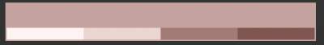
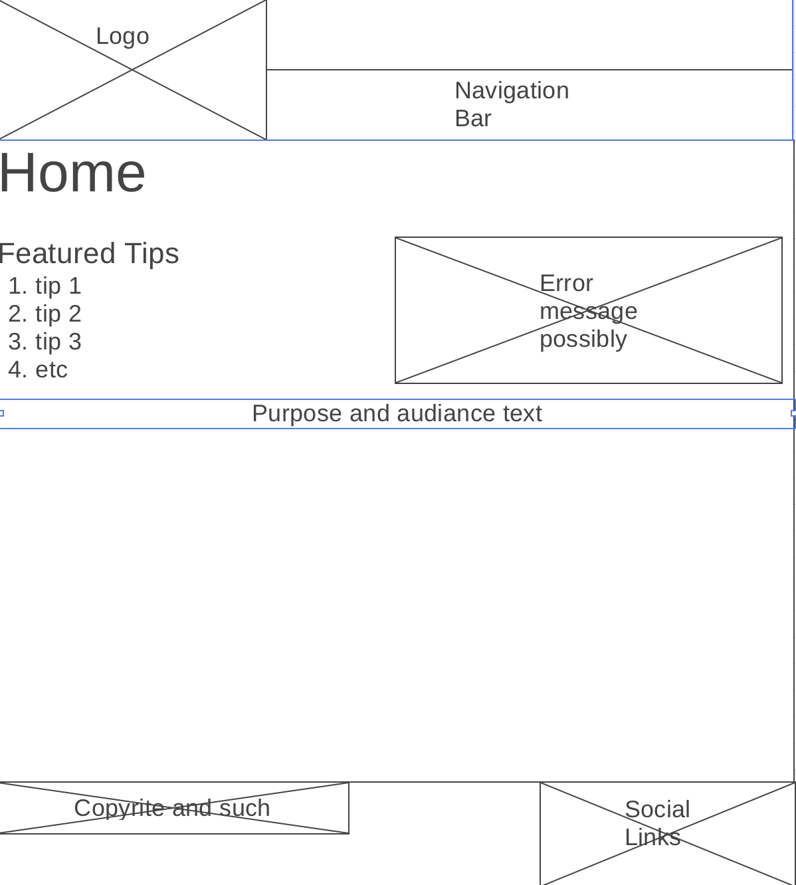
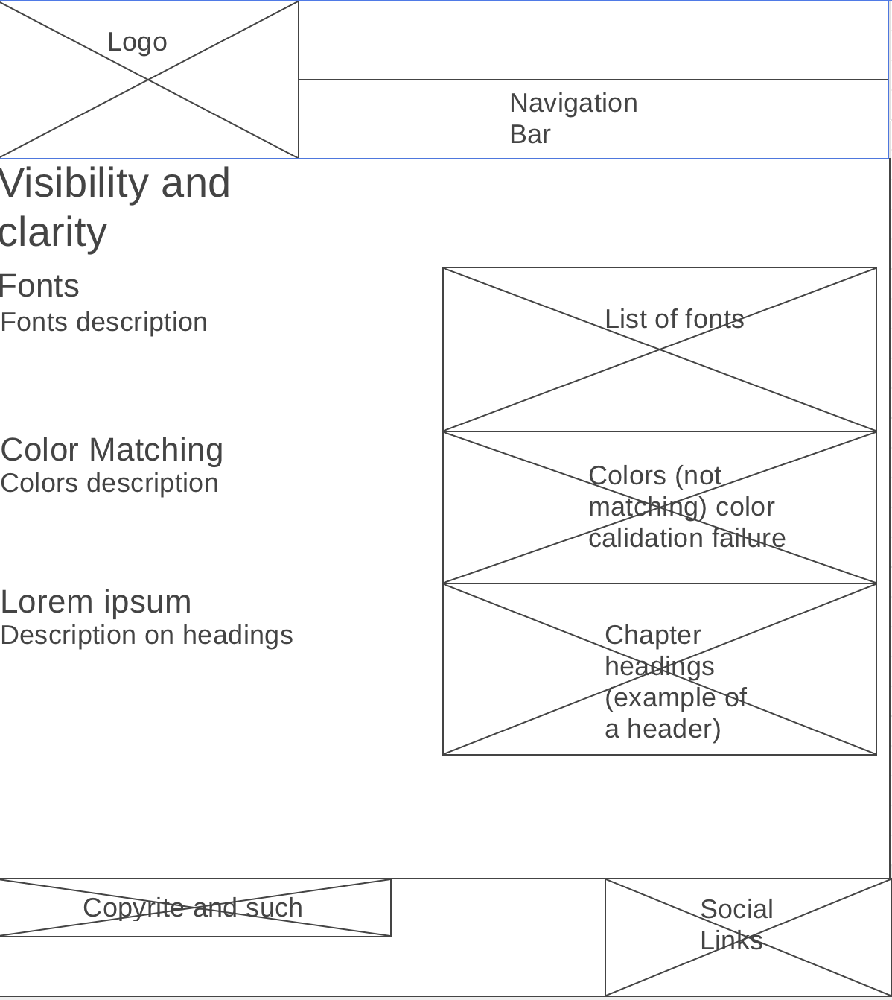
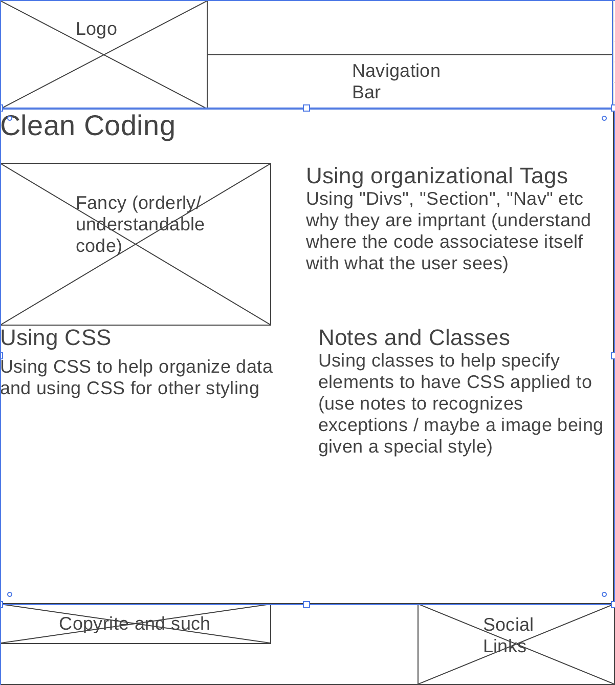
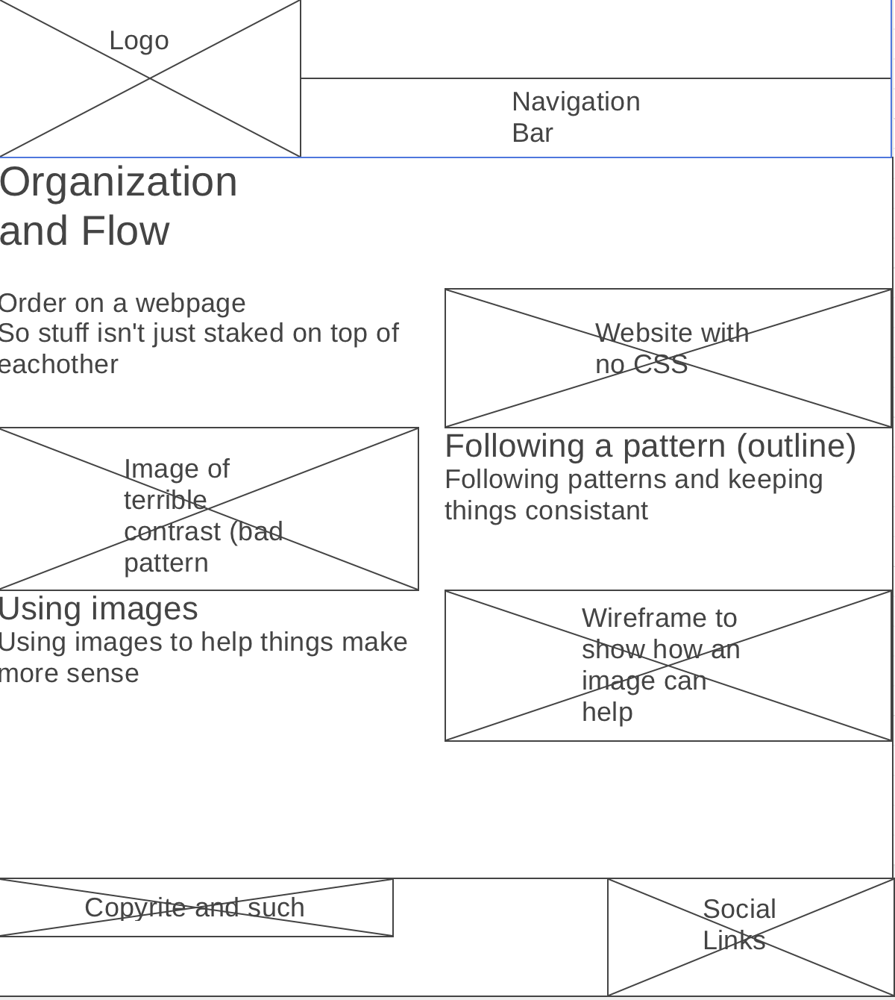

Our Purpose
Need a website, maybe just a few ideas or even a template. We have got you covered. From color schemes to font ideas. This website is separated into a few main areas such as colors, font, styling, and outlining to help give you ideas of how to put your website together. Most companies help you put your website together, not us, we just Give you the tips and tricks.
Audiance
We know that codeing can be a messy business and that there are many ways of gettng one thing done. That is why we were formed, to show you and share with you a few tricks of things to do and others that should be avoided. That your code may be as prestine as the PRO's.
Typography and Colors
Colors
- Background = #CAA29D
- Headers / Paragraphs = #FFF3F2
- Shadows / accents = #F0D4D1
- Header / Footer#A97973
- Body = #87754E
Fonts
- Headers / paragraphs = Fira Sans
- Links = PT Serif
Wireframes
   Site Map
Visibility and clarity
- Good and bad fonts to use
- Color matching
- Headers (frontend)
When putting a website together it is always important to make sure the visitor of the page is able to read the content on it. You can do this by verifying the the font is easy to understand, no crazy wierd loops and swerls. Another thing that can be used is the use of color. When changing the color of the background or maybe the font it is important that the colors dont clash in unwated ways. An exxample of this can be the use of two similar colors side by side or even on top of each other. Then for the headers, those come in useful to identify diffrent new sections of content and not just make the words bigger.
Organizeation and Flow
- The flow of a webpage so stuff isn't just stacked on top of each other
- following a pattern so each page is consistant
- using images with your layout
The flow of a webpage is key. Not having everything just stacked on top of everything else can create a sense of order and help direct people's atention. It is also important to follow a pattern. This is useful to help people more easily identify the content they are looking for, and navigate your website. Then the use of images can quite honestly help the viewer see what you are wanting to share with them. Images can also help in a variety of other areasa such as what a product looks like or how a finished product should appear.
Clean Coding
- Keeping HTML orderly (using divs) and other organizeational tags
- Using notes and classess
- Using simplicity in CSS
- Organizeing CSS
Now for the stuff that the viewer may not see in the everyday use of your webpage. You should Always keep your HTML orderly. This can be done in a handful of ways first being the tags we use. Using the header, main, section, and footer tags can help identify which section of code does what. You can also use notes and or classess to identify what certain sections or for such as identifying where the links are in the footer or which section contains the list of products you are trying to sell. Many times when dealing with CSS, there are multiple ways of doing one thing. So when dealing with it it is important to make sure we are using atributes that most efficiently acomplish our goals and not overlapping styles that are not needed or required. Then, finaly, organizing the list of styles that have been applied. when putting the styles together it can be a big help to keep them orderly in such a way, so that if a change is needed or an error occurs you are able to find what needs to be fixed instead of scrolling around for hours.